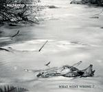

| Artist: | My Skinny Wonderland |
| Title: | What Went Wrong? |
| Label: | Uncle Doe |
| Length(s): | 50 minutes |
| Year(s) of release: | 2002 |
| Month of review: | [06/2003] |
| 1) | Introduction | 1.17 |
| 2) | Quiet Village | 5.20 |
| 3) | Christmas Crime | 4.24 |
| 4) | Harry Finally Found A Job | 1.36 |
| 5) | 216 | 4.45 |
| 6) | Whodunit | 2.04 |
| 7) | Finally | 3.44 |
| 8) | The New Liberace | 4.14 |
| 9) | What Went Wrong? | 3.17 |
| 10) | Blind Alley | 4.59 |
| 11) | Damned Messiah | 4.00 |
| 12) | The Paramount | 2.14 |
| 13) | Town Without Pity | 8.14 |
Quiet Village is a cover of a Les Baxter song. The use of keyboards is reminiscent of variety shows from the 1920's ballroom time, with its violin and choir sounds. Then again, there's a bit of Charlie's Angels in it too. For one thing, I can't take this seriously.
Christmas Crime is the combination of a gentle family round the tree song with comedy lyrics. The vocals on this one remind a bit of Faith No More, as do the odd combinations.
Harry Finally Found A Job is a strange instrumental intermezzo.
216 starts another 1920's song, with angelic choirs and friendly vocal lines. As it progresses the keys get heavier and the vocals distorted, sort of nice, but this is soon ended by the return of the angels.
Whodunit lunches us into sax driven antics, framed with guitar and single drum. Yet another track bouncing all around the room.
Finally seems to be a track focussing on a melody line with vocals, and controlled accompaniement. Quite novel, really. But, how could I expect differently, the middle section brings out the oddball in Skinny again.
What do you expect of a song named The New Liberace? It starts with sort of a humpty dumpty rhythm, and remains the showman Liberace like music, albeit using more electronics than the man himself would have done.
The title track starts with wah wah guitar and quiet percussion, later dominated by piano. Amazingly, this track stays serious for its full length, making it an odd title track, being far from representative.
Blind Alley has a nice build up, with driving guitars and threatening vocals. The instrumental mid section has grave key carpets and wind instruments. The silly voices are enough in the background not to break the tension. Good track, this is.
Damned Messiah is less serious, but does appear to do better in finding a balance between seriousness and ridicule. The heavy guitars and melodious saxes are positive points in this one.
The Paramount has the humming angel choir again, sometimes reminding of the choir of Freddie Mercuries Queen used to have for backing vox on some tracks. Beside that, Skinny's doing that thing with his voice again, which makes things sound unserious. The clear piano is nice.
Town Without Pity is another cover, sounding as if from days long gone, sort of big band feeling. Skinny sounding unserious again. Niceish track, still. The length of the track is created by the five minutes worth of ghost material, being tape loops with piano. Good stuff.